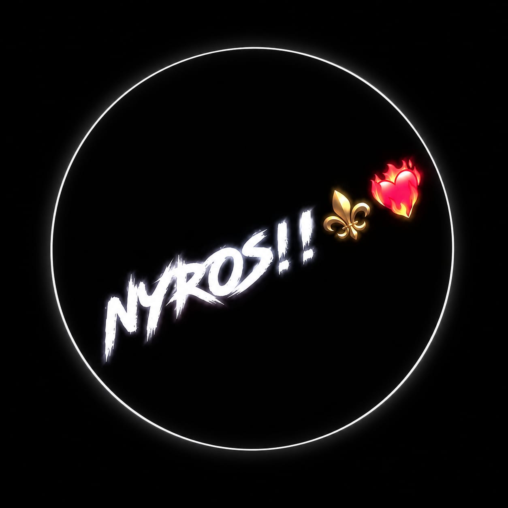

⌁
Social Media
Managing accounts, maintaining consistency, organizing content and building an engaging online presence.
DIGITAL CREATIVE • SOCIAL MEDIA • EDITING
Social Media Manager, Video Editor, Gamer, Content Creator and Web Developer building ideas for the digital world.

ABOUT ME
Hey! I’m Naitik Jadhav, also known as NYROS. I’m a passionate Social Media Manager with experience managing social media accounts and maintaining their online presence. I enjoy working behind the scenes to keep accounts active, organized, and engaging. My experience has helped me understand the importance of consistency, creativity, and presenting content in a way that connects with an online audience. I’m always interested in exploring new ideas and finding ways to make my work more creative and effective.
Apart from social media management, I’m also a video editor, gamer, and Free Fire content creator. Video editing allows me to express my creativity, experiment with different styles, and turn raw clips into engaging content. Gaming is another big part of my interests, especially Free Fire, where I enjoy the excitement of the game and creating content around it. These interests give me opportunities to explore different creative skills and express my personality through digital content.
I’m someone who enjoys learning, experimenting, and working on new projects. Whether I’m managing a social media account, editing a video, creating gaming content, or developing a website, I like bringing my own ideas and style into the work. I believe every project is an opportunity to improve, gain experience, and try something new. I’m always open to connecting with people who share similar interests, exchanging ideas, and exploring exciting opportunities in the digital world.
My journey is built around creativity, dedication, and a genuine interest in the online world. I’m continuously working on improving my skills and expanding my experience across social media, content creation, gaming, and web development. My goal is to keep growing, take on new challenges, and create work that reflects my personality and passion.
📫 Email: nyrosportals@gmail.com
📸 Instagram: @exotic.naitikk
WHAT I DO
Managing accounts, maintaining consistency, organizing content and building an engaging online presence.
Turning raw clips into engaging videos while experimenting with creative styles, timing and effects.
Creating digital content around gaming, social media and ideas that reflect a unique personal style.
Learning and building modern, responsive websites using HTML, CSS and JavaScript.
GET IN TOUCH
Have an idea, project or opportunity? Feel free to connect with me.